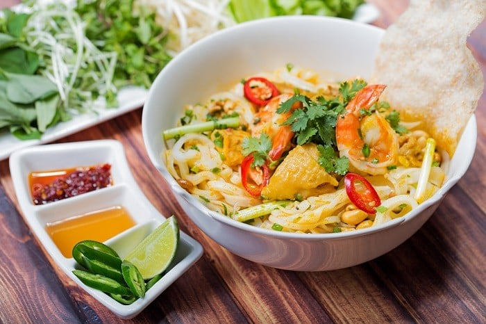
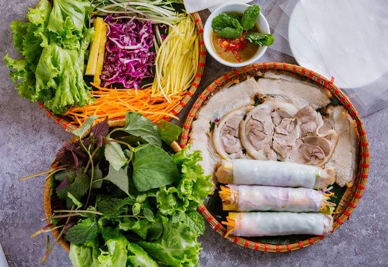
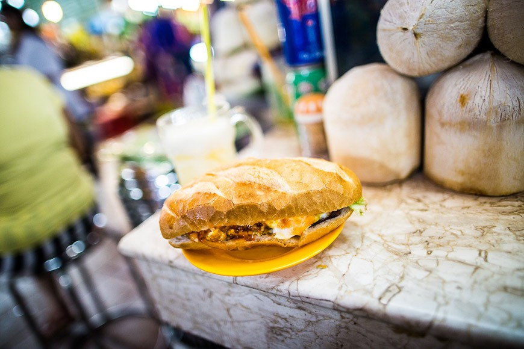
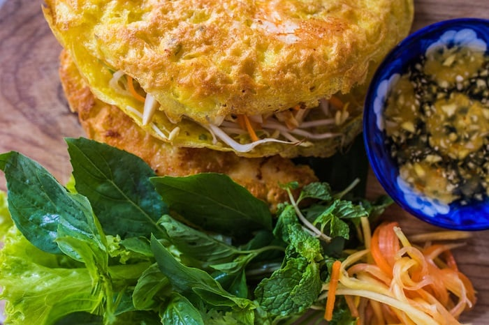
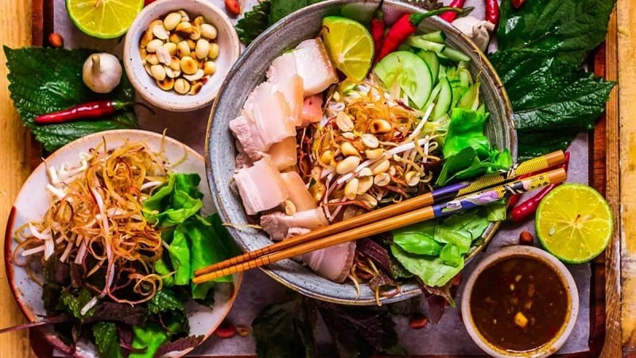

Top 5 The Most Amazing Dishes You Must Eat In Danang
There is no place in Vietnam but Danang that you can taste the specialties from both the North, Central, and South of the country. This city offers various inexpensive traditional dining options that any visitor must eat in Danang. And in this article today, we will guide you through the amazing dishes that can satisfy even the most critical epicures. Please stay with us till the end since no Danang trip can be complete without this food.
1. Mi Quang (Vietnamese Turmeric Noodle) - 166 Le Dinh Duong Street.
Quang noodles are always listed among the top yummy Da Nang foods that tourists should not miss out on. A full bowl of this food includes noodles, shrimp, pork, grilled rice paper, roasted peanuts,... It is soused in a broth made from bones which is very sweet and fragrant. The chewy, crispy noodles with golden color from turmeric are always the highlight of this dish.

Try Quang noodles once when you visit Da Nang City (Source: Collected)
This dish is tastiest when it is served with basil, coriander and sliced banana flower. These herbs will add freshness to your bowl and make it unforgettable. Furthermore, a little chili sauce will give you a kick to the boldness of flavor. In Da Nang, you can enjoy Quang noodles without any hassle while walking along the streets.
2. Banh trang cuon thit heo (Sliced pork in rice paper rolls) - 35 Do Thuc Tinh Street
Sliced pork rolled with rice paper, or banh trang cuon thit heo in Vietnamese, is one of Da Nang best foods that tourists should try. As its name suggests, when you enjoy this dish, you need to soften the rice paper with a little water and wrap it around the pork. To bring an unforgettable taste for foodies, the cook usually chooses tender pork and cuts it into small sliced pieces.
Like many other specialties in Vietnam, this Da Nang food comes with plenty of herbs and vegetables such as lettuces, corianders, basils, sliced cucumbers, sliced green mangos,... In addition, the sweet and sour fish sauce is a must if you want to balance the fat of the pork with the freshness of the greens.

Sliced pork rolled with rice paper is one of the best Da Nang foods (Source: Collected)
3. Banh mi Ba Lan – 64 Trieu Nu Vuong Street
Ham sandwiches might be familiar to you since it is famous all around the world. However, Vietnamese bread, which share common with Western sandwiches, will bring you the one in a million experience. One of the must-try eateries in Danang is banh mi Mrs.Lan. With the long-standing history, this small food stall sells thousands of traditional bread for a long waiting queue. Banh mi Ba Lan is the combination of crispy bread, jambon, cha, and especially fragrant homemade pate.
Moreover, the richness of fat is balanced with cucumber, coriander, chili, and spring onions for the perfect harmony. For that reason, it is understandable that this bread is one of the best delicious food that you must eat in Danang. However, the bread is so delicious and famous that there are several fake banh mi stalls in Danang. Above all, you should try this mouth-watering bread at two authentic address below.

Banh mi Ba Lan (Banh mi Mrs. Lan): Must eat in Danang
4. Crispy Savoury Pancake – Mrs. Duong Restaurant, K20/23 Hoang Dieu Street
Banh Xeo is a popular dish in the South and Central of Vietnam, especially Da Nang. Its appearance will immediately impress you for the first look while its flavor will knock you out for the first try. Therefore, don’t forget to enjoy some plates of Banh Xeo with your friends in your upcoming trip to Da Nang.
A super-thin and crispy layer of Banh Xeo is made from rice flour, turmeric and coconut milk. Shrimp, beansprouts, pork, mushrooms and sliced onions are stuffing ingredients which make this Da Nang food perfect. Especially, you cannot stop the craving if it is served right after leaving the pan - when it is the most crispy.

Many people love the crispy outer layer of Banh Xeo (Source: Collected)
5. Vermicelli salad with pork and anchovy sauce – 23/14 Tran Ke Xuong Street
One of the most amazing Da Nang foods that you should put on your bucket list is Bun Mam Nem. It is a kind of vermicelli salad which is served with pork, anchovy sauce and raw vegetables. Although this dish is somewhat familiar with many gourmets, it is the unique fish sauce made by the locals that makes the taste of this dish exceptional.
Traditionally, the main ingredient of Bun Mam Nem is boiled pork. However, many eateries now replace it with roasted pork to create a modern version with more flavors. Depending on your food choices, you can always find the version of Bun Mam Nem you like on many food streets in Da Nang City.

The fish sauce determines whether Bun Mam Nem is tasty or not (Source: Collected)